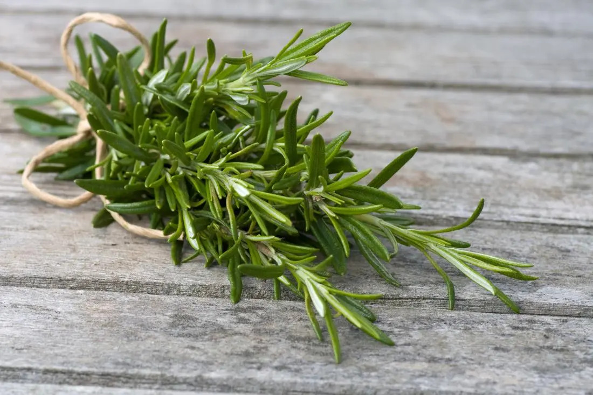
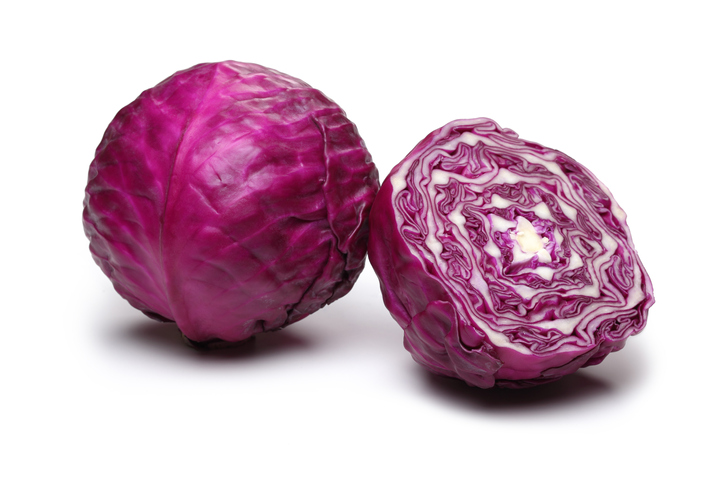
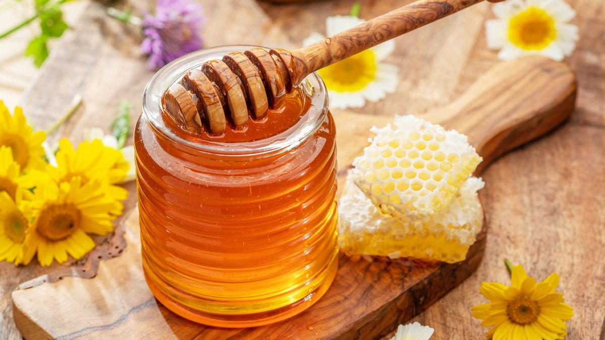

Easing your struggles with a few gargles.
Freshmen is a mouthwash consisting of natural ingredients such as Rosemary leaves, Red cabbage, and Honey. Freshmen aims to be an alternative to commercial, alcohol-based mouthwashes as studies have shown such products to be a cause of Xerostomia (dry mouth) with excessive use.
Why these ingredients?
Rosemary has several properties and chemical components that may be beneficial to a person’s oral health. For instance, Rosemary is rich in Carnosic acid, a major phenolic compound isolated from the leaves of rosemary, which has been reported to have remarkable antioxidative, anti-inflammatory, and antimicrobial properties. Antioxidants play a crucial role in maintaining good oral health as they reduce inflammation in the gums, protect against harmful effects of carcinogens that can cause oral cancer, and prevent tooth decay by neutralizing the acids produced by bacteria in the mouth.
Red cabbage is used as a coloring agent. Red cabbage is used for pH testing, wherein a liquid at normal pH levels turn into the color blue, otherwise red at acidic pH levels. This makes red cabbage responsible for Freshmen's deep blue-colored liquid, indicating its non-acidic nature.
Honey has the potential to restrict the growth of various food spoilage bacteria such as Escherichia coli, Clostridium perfringens, and Salmonella species, thereby preventing contamination. Considering these properties of honey, it would be used as a preservative agent for Freshmen in order to maintain it in good condition for a significant amount of time.
For additional information, Click here for a copy of the research paper.